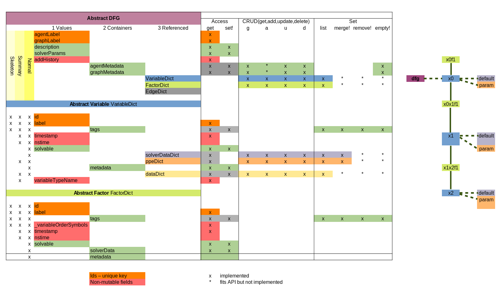

DistributedFactorGraphs.jl
Home
Data Structure
Getting Started
Introduction
Building Graphs
Using Graph Data
Drawing Graphs
Traversing and Querying
Common API Interface
DistributedFactorGraph API's
Graphs.jl
LightGraphs.jl
CloudGraphs.jl
Reference
Getting Started
Common API Interface
Edit on GitHub
Common API Interface
Common API Interface
